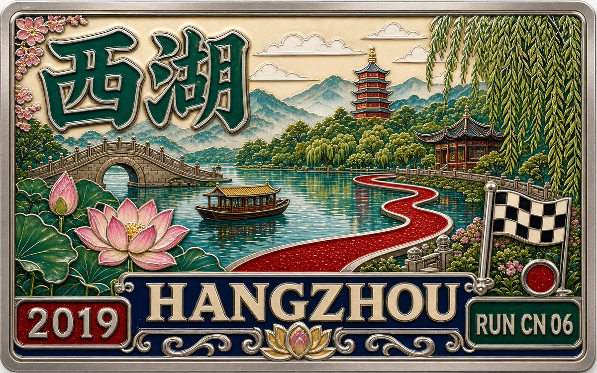

RUN50 DISPATCH · RUNCN
RunCN 第21站 · 西湖半马 · 我去西湖跑半马，偶遇跑者施一公
RunCN · 中国跑马故事
Vlog 开场位｜Runcn
OPENING NOTE
从上海到杭州，去西湖边甩肉，跑一场半马，也偶遇了跑者施一公。
本文速记
从上海到杭州，去西湖边甩肉，跑一场半马，也偶遇了跑者施一公。

奖牌质感封面｜Runcn

西湖印象 @Arsenan
一面山水 一面大学
六月份从武大毕业，那之后体重长了不少，心态更是逐渐咸鱼化。没事总爱摸摸自己的肚子，然后和朋友调侃，男哥已经退役，跑圈不再有哥的传说，有事请来学术圈找我。
朋友回复：“男哥，你还年轻。”用手摸了摸自己浓密的头发，觉得朋友好像也没说错，至少还没秃头呢，那就哪天秃头了再考虑退役的事吧。做个行动派，先去西湖跑个半马找找感觉，看看还行不行。

周末去西湖甩肉。 @Arsenan
FIELD NOTE 01
西湖大学，偶遇施一公院士
前言
上海和杭州真的近，火车不到两小时就到了，住宿选在了西湖边的青芝坞，环境很好。
西湖是现今《世界遗产名录》中国唯一一个湖泊类文化遗产。从南宋流传至今的“西湖十景”依然是游客来到杭州一定要去打卡朝圣的地方。上世纪80年代评选出的“新西湖十景”，也声名大噪，成为了游客们的新宠。

西湖神州网红小船。 @Arsenan

西湖神州网红小船。 · 2 @Arsenan
听说西湖的日出很漂亮，我就定了早晨五点的闹钟，准备追一追西湖的早晨。

西湖神州早晨。 @Arsenan
早晨五点半，我跟着导航骑着单车来到了西湖边的“神州基地”，网上说这里看日出不错。
“西湖神州”是西湖的一隅，水面静卧着十来艘小船，配合着粼粼的波光，相异于断桥的人流，有一种“野渡无人舟自横”的闲趣。

航拍西湖神州小船。 @Arsenan

航拍西湖神州小船。 · 2 @Arsenan
一位老大爷和小哥已经等在了这里，本以为西湖的日出会很壮丽，结果这里只能看到日出的红晕，大爷告诉我们，想看完整的日出可以到对面的苏堤。西湖的水面弥漫着白色的水气，在淡粉色的光晕中，有一种说不出的梦幻。不过没看到完整的日出，还是有点遗憾。

航拍西湖早晨。 @Arsenan

西湖偶遇大爷和小哥。 @Arsenan
大爷是本地人，说可以带我们去另一个景点弥补一下遗憾，大概骑了两公里，我们来到武状元坊，这边的景色很秀丽也很精致。

武状元坊。 @Arsenan

武状元坊水中倒影。 @Arsenan

武状元坊。 · 2 @Arsenan
武状元坊是三台山路浴鹄湾西侧的一个牌坊，始建于1214年，2003年重建。看上去很有气势，武状元坊边上有黄公望故居——子久草堂。黄公望，元代画家《富春山居图》的作者。

航拍霁虹桥。 @Arsenan

航拍霁虹桥。 · 2 @Arsenan

航拍霁虹桥。 · 3 @Arsenan
早餐吃了有名的杭州汤包，之后取了跑步装备，中午去浙大玉泉校区找了武大师兄刚儿哥聊人生，刚儿哥是学术大佬浙大博士，刚儿哥请我吃了浙大小乐惠，据说是最好吃的食堂。

杭州汤包。 @Arsenan

浙大大佬刚儿哥。 @Arsenan

浙大小乐惠。 @Arsenan
别了刚儿哥，下午坐了一个半小时公交去了云溪小镇的西湖大学见check难友17妹，西湖大学就在阿里云谷对面，中国最具活力和潜力的大学，目标成为中国的“哈佛”。

西湖大学。 @Arsenan
我一直很想一睹西湖大学风采，这次终于有机会了。17妹用校园卡接我进了学校，西湖大学不大，我们没一会就绕了一圈，又回到了校园门口，17妹说：“施一公老师每天8点左右会在这里跑步的。”
我看了看表，怎么才5点，应该是没戏，结果一抬头，施一公老师穿着跑步装备跑进了西湖大学，简直幸运爆棚，我蹑手蹑脚的走到施老师旁边，然后试探性的问了一下施老师是否可以合影，结果施老师特别爽快的说了句：“没问题！”

有幸和施一公老师合影。 @Arsenan
施一公院士可以说是中国最具话题的学术大咖，也是中国学术圈的旗帜性人物，最让我开心的还是，施老师也是跑步爱好者，并且装备还很骚气，原来我和施老师也有共同的爱好。跑步和科研在施老师身上并不矛盾，显然施老师平衡的很好，这也是我要努力的方向。

check难友17妹。 @Arsenan
17妹请吃了西湖大学食堂，还有幸见到了和我方向很类似的check难友销阳，打卡成功。

check难友销阳。 @Arsenan
FIELD NOTE 02
西湖半马，我被妹子套了圈
Run50
之前宿舍就在东湖边，跑东湖是我的最爱，风景很美，东湖面积是西湖的六倍，所以我一直对跑西湖抱以一种不屑的态度，觉得不会过瘾。

西湖早晨。 @Arsenan
这次比赛是“爱徒野”主办，分为4公里和半马两个组别，总规模不过400人，半马要跑六圈。要知道东湖可以划出n条半马赛道，甚至可以举办不折返的绕湖百公里比赛，所以赛前我的兴奋点也没有多高。

西湖日出。 @Arsenan

西湖日出。 · 2 @Arsenan
不过在比赛日，西湖的风景真的惊艳到我，与东湖粗犷大气不同，西湖的精致细腻别有韵味，虽然受限于景区限制，但赛道还是安排在了白堤这里举行，我想组委会一定也是进行了积极的争取。

西湖日出。 · 3 @Arsenan
早晨赶赴鲁迅像大草坪起点处，路过孤山路的时候居然偶遇到了西湖日出，可以说是除了偶遇施一公外，周末杭州行的另一大惊喜。

西湖日出。 · 4 @Arsenan

西湖日出。 · 5 @Arsenan

西湖日出下的荷花。 @Arsenan
赛事规模不大，天气很好，8点准时起跑，我们从鲁迅像大草坪出发，我们一路经过白堤，北山湖，孤山路，平湖秋月最后回到鲁迅像大草坪，不过半马这个要跑六圈。

赛前热身。 @Arsenan

参赛老大爷。 @Arsenan

爸爸带着孩子一起参赛。 @Arsenan

套我圈的粉红妹子。 @Arsenan
赛道在开放场地举行，景区的游人也会为我们加油，好久没有跑半马，我开始跑的还挺认真，一直没有拿出手机拍照。路过北山路的时候，一切似乎似曾相识，记忆似乎回到了武大东湖南路，那些闪亮的学生时光。

起跑。图/世杰视界 @Arsenan

西泠桥。 @Arsenan

北山路。 @Arsenan
穿过周末的人流，路过蒋经国故居，来到断桥残雪白堤处，西湖的风吹的很舒服，两边的手划小船充满古风。

云水光中。 @Arsenan

断桥。 @Arsenan

断桥。 · 2 @Arsenan
远处的城市建筑隐约可见，似真似幻，犹如一幅画。西湖的精致是东湖所不能比的，能在这里奔跑真的是一件很幸运的事。如果不是参加比赛，我绝对很难在游人如梭的白堤跑的这么自如。

白堤。 @Arsenan

白堤。 · 2 @Arsenan

白堤边小船。 @Arsenan

白堤边小船。 · 2 @Arsenan
不知不觉四圈过去了，状态还行，虽然胖了，但是底子还有一些。第五圈是，我被粉红色妹子套了圈，我这才回过神，索性也就佛系了，跑跑停停拍拍照，接近两个小时完成半马。

白堤上跑步。图/世杰视界 @Arsenan
奖牌比我想象中好看，赛后大家坐在草坪上休息，阳光洒在脸上，把汗水晒干，留下白色的盐渍，满嘴都是咸咸的跑步味儿。

完赛奖牌。 @Arsenan

完赛奖牌。 · 2 @Arsenan

补给。 @Arsenan

在完赛草坪休息。 @Arsenan
中午刚儿哥又在浙大请我吃了另一个网红食堂，真·亲师兄，实锤了。然后我俩下午又和武大斌师弟视频聊天，好像又回到了两年前。

浙大网红餐厅。 @Arsenan

浙大香锅。 @Arsenan

浙大虾仁鸡蛋。 @Arsenan
周末短短的杭州行，见了想见的人，偶遇了不奢望能见到的大佬，也跑了好久没跑的半马。
用跑步给自己提个醒，要好好减肥了，也期待，未来会有好事情发生。
RUN50 FINISH LINE
这一站，收进地图。
从上海到杭州，去西湖边甩肉，跑一场半马，也偶遇了跑者施一公。 跑完这一篇，Run50 的故事又多了一块颜色。
21
RUN50
RUNCN
MARK
站
NOTE
如果这一站也勾起了你的某段跑步记忆，欢迎在公众号留言里接着聊。别太正式，像赛后坐下来喝一口水那样就行。
文字 / 编辑 / 排版 · Arsenan